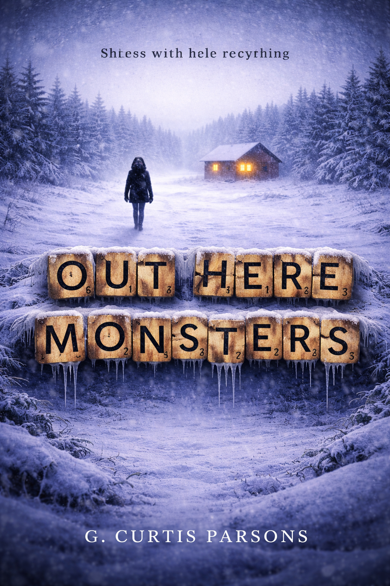

Ryan’s Calling
Book One
Immediate, unsettling, and built without reflective distance. The story moves in real time and lets the unease arrive before the explanation ever can.
Read moreImmediate, unsettling, and built without reflective distance. The story moves in real time and lets the unease arrive before the explanation ever can.
Read more
Ordered, analytical, and evidence-driven. Structure becomes pressure as the fragments begin forming a pattern that refuses to remain contained.
Read more
Reflective, interpretive, and emotionally reconstructed. Silence can’t hide everything, and absence becomes part of the story being told.
Read moreFragmented, weighted, and existential. The final book turns toward implication, collapse, and the emotional cost of meaning that refuses to settle.
Read moreFour books. Four consciousness models. One underlying reality approached from different angles: real-time system processing, analytical reconstruction, interpretive emotional reconstruction, and internal collapse through weight and meaning.